Operating Documentation
Direction 5440001-3, Rev# 6
Signa HDxt Service Methods
Module Version 1.0, Version Date 5/15/07
Operating Documentation |
| Required Persons | Preliminary Reqs | Procedure | Finalization |
|---|---|---|---|
| 2 | Not Applicable | 4 hours | Not Applicable |
Vibration can be transferred from the Gradient/RF coil to the bridge. This procedure installs a new bridge support to isolate the bridge from the Gradient/RF coil.
| Item | Qty | Effectivity | Part# | Manufacturer | |
|---|---|---|---|---|---|
| Plastic/aluminum or wooden ruler | 600mm minimum length | - | - | - | |
| Plastic or aluminum T square | 300mm minimum length | - | - | - | |
| Masking tape | - | - | - | ||
| 3/16-inch drill bit | 1 | - | - | - | |
| 1.5-inch (40 mm) hole saw with a 0.25-inch (6 mm) pilot drill bit | 1 | - | - | - | |
| Variable speed drill | 1 | - | - | - | |
| Rubber mallet | 1 | - | - | - | |
| MR Tool Kit (non-magnetic tools) | 1 | - | - | - | |
| Aluminum Oxide or Silicon Carbide sandpaper 80 to 100 grit | - | - | - | ||
| 4 foot plastic level | 1 | - | - | - | |
| Citric cleaner | - | - | - | ||
| Alcohol wipes | - | - | - | ||
Table 1 shows a breakdown of kit parts for the bridge support section of this upgrade.
Table 1: Bridge Support Parts List
| Part Number | Box | Quantity | Description |
|---|---|---|---|
| 2293379-2 | 1 | 1 | Bridge Support |
| 2109866-21 | 1 | 2 | M10 by 30mm long bolt (stainless steel) |
| 2109875-4 | 1 | 8 | M10 Nut (jam nuts) (stainless steel) |
| 2318948 | 3 | 2 | Support Cap Cup (phenolic) |
| 2318950 | 1 | 2 | Support Cap (phenolic) |
| 2226752-2 | 1 | 2 | Foam Gasket, Bridge Support Spacer |
| 5196584 | 3 | 1 | Economy Duct Tape |
| 2116325-5 | 1 | 2 | M10 x 110mm Stud (stainless steel) |
| 46-136374P37 | 3 | 2 | O-Ring, width .139 ID 0.734 durometer A 70 |
| 46-282264P37 | 3 | 1 | 2 oz Dual-Pak Cartridge Epoxy, clear |
| 2318581 | 1 | 1 | CX/K4 WideOpen Enclosure Bridge Support Installation Instructions |
| Field Supplied | N/A | 1 | Anti-seize |
Box 1: Part Number 5195383 Box 2: Part Number 5195385 Box 3: Part Number 5195384 | |||
Refer to Illustration 1, Illustration 2 and Illustration 3 for a visual representation of the parts and finished upgrade views.
Illustration 1: Bridge Support Assembly Parts Illustration
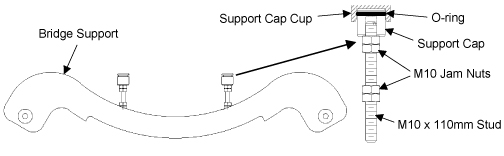
Illustration 2: Upgraded Front Bridge Assembly
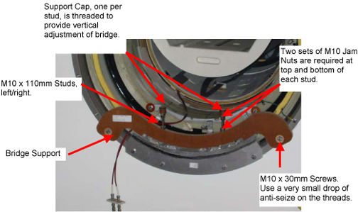
Illustration 3: Updated Rear Enclosure
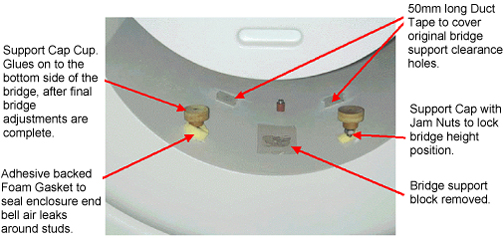
The following lock out tag out procedures should apply in most cases. However, if you have a system type not covered in this section, proceed to the safety section of the appropriate service documentation and follow the Lock Out Tag Out procedures.
| ||||
| Possible personal injury! | ||||
| Avoid serious injury or death by electrocution. | ||||
| Remove power from the ACGD hardware before working on the module. Lock and tag out power to the ACGD hardware system wall box disconnect before starting work. |
Bring the PC software down.
LX (SGI-based) System Software shutdown
Toggle mouse control to the PC monitor using the hard key on the top left side of the keyboard housing.
From the PC monitor, use the mouse to select Start → Shutdown → Shut down. Bring the Signa software down.
Toggle mouse control back to the Signa monitor using the hard key on the top left side of the keyboard.
Click [Toolbelt].
Click [System Shutdown] on the Service Desktop Manager.
Click [OK] to confirm the shutdown.
Wait for the system to indicate on the monitor that it is safe to power off the computer before proceeding. This usually takes about 90 seconds.
Horizon (Genesis console) System Software shutdown
Touch [Utilities].
Touch [System Shutdown].
Select [OK] to confirm the shutdown.
Wait for Boot Prompt (this indicates it is safe to proceed).
Remove the cover from the front of the ACGD cabinet. See Step .
Illustration 4: Breaker Location

Rotate the main breaker on the ACGD/PDU (labeled INPUT) counterclockwise to the green, O (OFF) position. See Step .
Illustration 5: Main Input Breaker in the Off Position

Verify that the 3 phase indicator lamps on the front of the Power Distribution Unit (PDU) as shown in Illustration 7 are not illuminated.
Lock Out / Tag Out the PDU INPUT circuit breaker.
Press the left-pointing arrow on the end of the handle to expose the location where the lock and tag can be placed.
Lock and tag out the PDU INPUT circuit breaker as shown in Step .
Illustration 6: PDU Main Input Circuit Breaker Locked and Tagged Out

Illustration 7: PDU Phase Indicators and Test Points
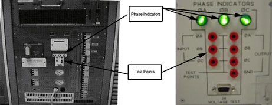
Verify that all energy has been dissipated. Measure the power at the reduced voltage front panel test points of the PDUs (420 and 208). See Illustration 7. Voltages must be at 0Vac before continuing.
| NOTE: | The test points are at 100:1 ratio (208Vac = 2.08Vac; 420Vac = 4.20Vac |
The magnetic field strength used in MRI is several thousand times that of Earth's magnetic field! This field is three-dimensional; therefore, magnetic field precautions must be applied to areas on floors above and below the Magnet, as well as to the surrounding space on the same level. Take the following precautions to prevent danger to persons and equipment:
Post WARNING signs outside the 5 gauss zone, alerting personnel with cardiac pacemakers, neurostimulators, and other biostimulation devices of the effect of the magnetic field on these devices.
Post WARNING signs at the termination point of the Magnet Cryogenic Vent, alerting personnel to the sudden discharge of freezing gases and small objects.
Post SECURITY signs on both sides of all doors leading into the Magnet Room, alerting personnel of high magnetic field and not to bring ferro-magnetic objects in the Magnet Room. Security signs will also indicate magnet field strength.
Do not bring ferro-magnetic objects (e.g., tools, pens, tape measures, steel-toe shoes, vacuum pumps, etc.) into the Magnet Room. Large metal objects must not be brought near the outside walls of the Magnet Room. To find out about specific equipment proximity limits refer to the specific Pre-Installation manual published for the system.
Many non-ferrous tools may exhibit some attractive force into the Magnet. When a tool is not in use, it should be placed outside the Magnet's 5 gauss zone. Placing tools closer may allow them to be pulled into the magnet, causing personal injury and/or equipment damage.
During some service operations, ferrous tools and/or parts may have to be carried into or out of the Magnet Room. Examples include: gradient cable crimpers, table dock, longitude drive motor, blower box, coldhead, etc. Extreme care must be taken to prevent these ferrous parts from being pulled into the Magnet. Two field personnel should be on site any time a ferrous tool or part must be moved into or out of the Magnet Room. The part replacement procedure should be consulted prior to removing or replacing ferrous components. The correct tools should be used in full working condition prior to attempting ferrous parts replacement.
When moving a ferrous item (such as: gradient cable crimpers, gradient cable cutters, patient blower box, gradient blower box or longitude drive motor) to the back of the magnet, follow a path that will keep you out of the 200 gauss line of the magnet. Keep the ferrous part as close to the screen room wall and floor as possible. Step shows the 200 gauss region around a 3T/94 magnet and Step gives details of the GE 1.5T magnet 200 gauss line.
Analog watches (those with hands) and magnetic-coded credit cards can be destroyed if taken near the Magnet.
Magnetic tapes can be erased, recording heads magnetized, and camera shutters ruined by strong magnetic fields.
Use only non-magnetic gas cylinders and Dewars when transferring cryogens into an energized Magnet. All gas cylinders must be secured to a cart or wall to prevent falling whenever the protective cap is removed.
Illustration 8: 3.0T/94 200 Gauss Plot

Illustration 9: GE 1.5T 200 Gauss Plot

Gradient Isolation Kit must be installed prior to installing this bridge kit. To check if the Isolation Kit has been installed, remove the front enclosure end bell. Refer to service CD ROM 2160623, Magnet Enclosure, and then go to the Wide Open Enclosure section for directions on removing the enclosure. Bridge may remain in the magnet bore to obtain general bridge support post position.
Refer to Illustration 10. Check to make sure the gradient isolation kit is installed. The Gradient Isolation Kit must be installed with the two (2) Upper Radial supports, located at approximately 2 and 10 o'clock positions. Note, the two (2) Upper Radial supports are installed on both the front and rear end of the gradient coil (4 per coil). If radial supports are installed, refer to 2319693 for proper parts and application. Check the tightness of each of the supports. If the parts are able to move by hand, follow the installation instructions making sure to secure the M16 screws using the proper M16 locking nut.
Illustration 10: Checking For Gradient Isolation Kit

If necessary, Gradient isolation kits can be ordered for either the Cx or the Cx/K4 magnet.
2242380 - BRM Gradient Isolation Kit
2247493 - CRM Gradient Isolation Kit
| NOTE: | Kits deliver with the gradient isolation parts, upper radial supports, and coil-lifting tool. |
The phenolic bridge support will attach to the magnet interface ring. The part will mount above the gradient coil aluminum extension plate. The bridge support, when properly fitted, will not contact the magnet except at the two bolt hole locations on the magnet interface ring identified in Illustration 11. Locate the phenolic bridge support. The bridge support fastens to the magnet interface ring with the shown surface in Illustration 12 facing away from the magnet iso-center.
Locate 2 - M10 x 30mm Hex Head screws.
Apply a very small drop/dab of anti-seize to the M10 x 30mm screws.
Position the bridge support to align the two through holes in the phenolic support to the magnet interface ring bolt holes identified in Illustration 12.
Illustration 11: Bridge Support Mount Points
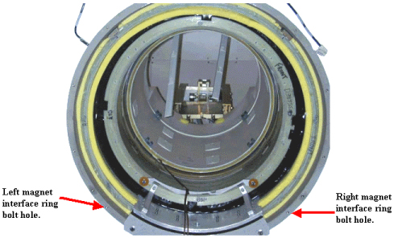
Illustration 12: Phenolic Bridge Support - M10 X 30mm Hex Head Screws Seated
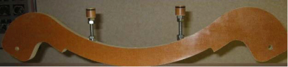
Insert a single M10 x 30mm screw into either the left or right phenolic through hole and hand tighten.
Insert the second M10 x 30mm screw into the other phenolic through hole and hand tighten.
Tighten the M10 x 30mm bolts to 10 ft-pounds.
Feed RF Bias cable to the side of the gradient mounting bracket as illustrated in Illustration 13.
Illustration 13: Inserting RF Bias Cable

| NOTE: | The phenolic bridge support should be installed onto the magnet without the M10 x 110mm all thread studs, jam nuts and phenolic parts. Install the M10 all-thread stud, jam nuts and phenolic parts after the end bell is re-assembled |
Set the initial height, h, to 87 mm from the phenolic interface on the (mustache) Bridge Support to the top of the Support Cap, but not including the Support Cap Cup. Refer to the details defined in Illustration 24, when setting the dimension h. It is critical to follow Illustration 24 setups to prevent the need to remove the end bell multiple times. Refer to Illustration 14. Use h as a starting point.
Illustration 14: Setting The Height Of The Phenolic Bridge Lateral Support
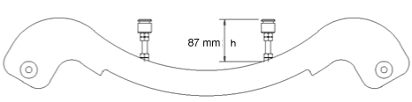
The 110mm long all thread studs will screw into the Bridge Support to the approximate height defined after the end bells are secured to the magnet enclosure assembly. Jam two M10 nuts to the bridge support to prevent loosening. The final height includes the Support Cap Cup.
Final adjustment to the final vertical position will be achieved later in Final Adjustments by changing the vertical position of the phenolic bearing cap support.
The production bridge has a positioning pin located near the patient table belt assembly. The pin is captured in the aluminum tube. The removal of this pin is optional. If you are not able to remove the pin, leave in place but check to make sure the pin does not contact the front-end bell. See Illustration 15.
Illustration 15: Locator Pin
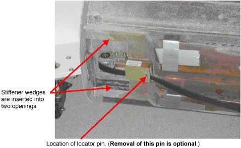
The phenolic cap support will support the weight of the patient. This cap support will insert into the bridge support cap cup that attaches to the bottom of the bridge.
Illustration 16: Bridge Support
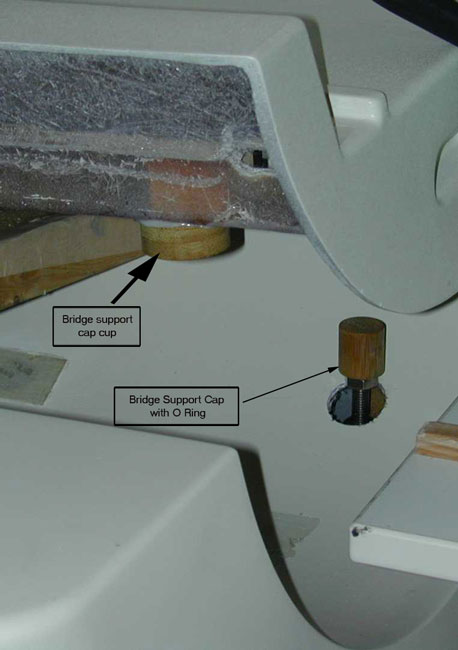
End Bell Modifications and Preparations. Refer to Illustration 17 and Illustration 18.
Measure the distance between the centerline of the left vertical support to the centerline of the right vertical support. See Illustration 19 to verify 233mm.
If the distance measured is 233mm, follow Illustration 20 for finding where to drill. Place masking tape onto the end bell where the new holes will be drilled to pencil drill hole locations and to protect the end bell finished surface.
Following the directions in Illustration 19, pencil the location of the new holes on to the masking tape.
After the points to drill are located, start drilling with a 3/16-inch pilot hole. Then cut 1½-inch (38mm) diameter hole using hole saw (with a ¼-inch mandrel). The 1½-inch diameter hole needs to be drilled in a vertical direction, not perpendicular to the surface of the end bell.
Illustration 21 shows properly fitted access holes through end bell.
Refer to Illustration 22 and close off air leaks by doing the following:
Clean adhesive from yellow memory foam at 2 locations front and rear end bells.
Apply 50mm long pieces of Cloth Duct Tape to cover holes.
Clean up area where positioning block was removed to eliminate remaining epoxy using citric cleaner.
Apply a piece of Cloth Duct Tape over area to seal surface.
Modify the rear end bell gussets as shown in Illustration 23.
Illustration 17: End Bell Modification Preparations
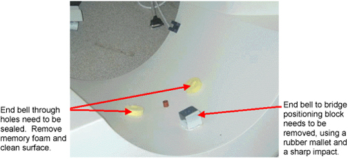
Illustration 18: End Bell Modification Preparations (cont'd)

Illustration 19: Through Hole Location Centerline Measurement

Illustration 20: Through Hole Location Detailed Measurements If Centerline Measurement Is 233

Illustration 21: End Bell With Properly Fitted Access Hole
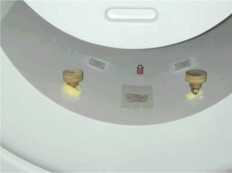
Illustration 22: Closure Of Air Leaks

Illustration 23: Modification Of End Bell Gussets
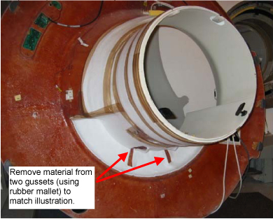
| NOTE: | Two bridge support rods with jam nuts are threaded into the bridge support after the front end bell is installed. |
Position the end bell using the standard enclosure assembly procedure found on service CD 2160623 Magnet Enclosures then Wide Open Enclosures.
Fasten the end bell to magnet following the enclosure assembly process.
| NOTE: | Bridge is leveled using the phenolic threaded caps on the front end and through adjustment of the rear pedestal on the rear of the bridge. |
Re-assemble and install the two bridge support rod assemblies into Support (mustache) Bracket. See Illustration 24.
Illustration 24: Install Bridge Support Rods
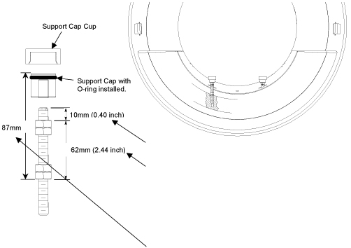
Stretch O-ring over Support Cap and position into groove in phenolic.
Slide the Phenolic Support Cap Cup onto phenolic Support Cap support member.
Lower bridge into position connecting the cradle drive mechanism. See Illustration 25.
Illustration 25: Attach Bridge To Rear Pedestal
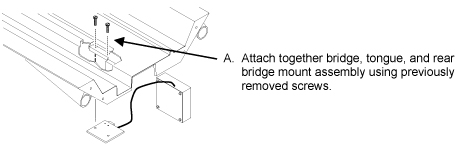
Align front of bridge to end bell. See Illustration 26.
Illustration 26: Front Bridge Alignment
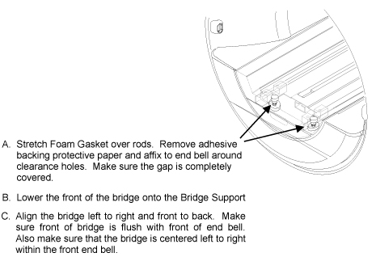
Adjust the front bridge to its final position. See Illustration 27.
Illustration 27: Front Bridge Adjustment
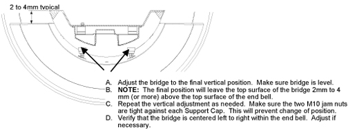
Adjust the rear pedestal and the front threaded caps to set the final bridge leveling position. See Illustration 28.
Apply adhesive to the bridge support caps:
Raise the front of the bridge high enough to apply adhesive in next step.
Apply adhesive to top of each Bridge Support Cap.
Lower the bridge to rest firmly on the bridge support caps, making sure the bridge does not touch the body coil or the end bells.
Verify the vertical and horizontal positions as noted in Step 6.
Allow adhesive to cure.
After bridge is level, tighten jam nuts to prevent the Bridge Support Caps from changing position due to vibration. The top jam nuts (both left and right support) should be accessible with the enclosure in place.
Illustration 28: Leveling Of Bridge

| NOTE: | Rear pedestal to be adjusted to maintain full contact between bottom of bridge and top of rear pedestal. |
| NOTE: | Tongue to bridge alignment is critical to smooth belt tracking and operation. Make sure tongue is square to bridge and rear pedestal. |
No finalization steps.